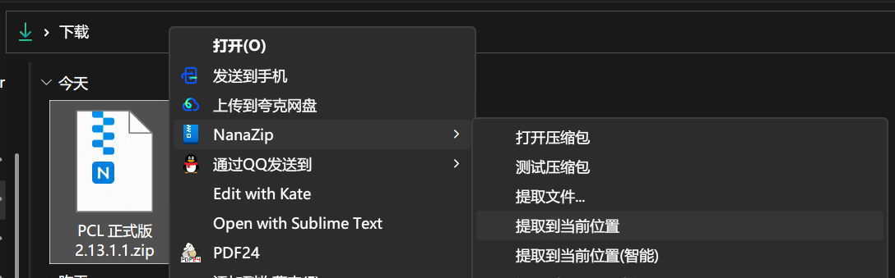
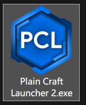
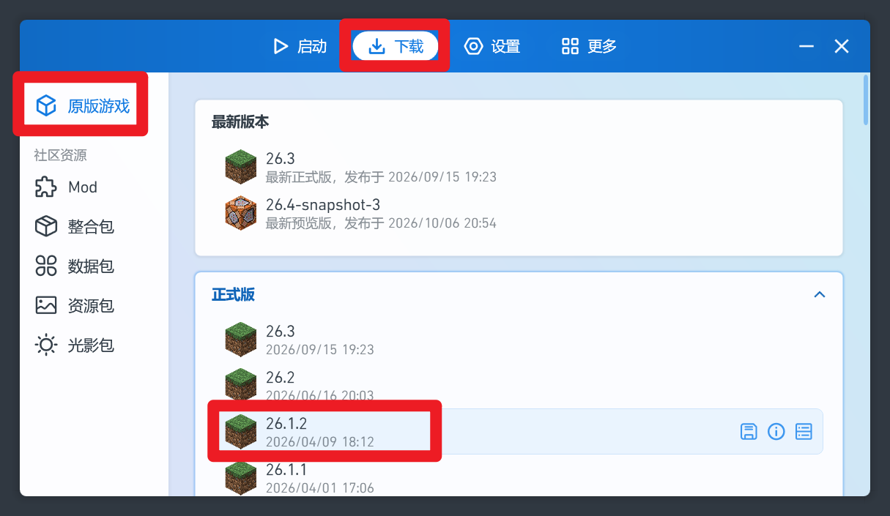
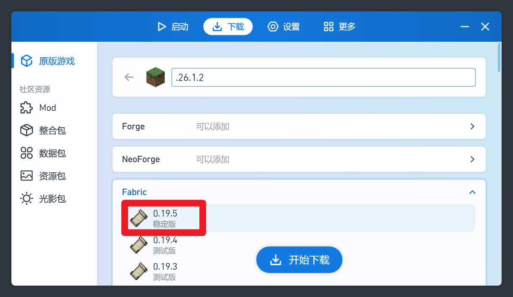
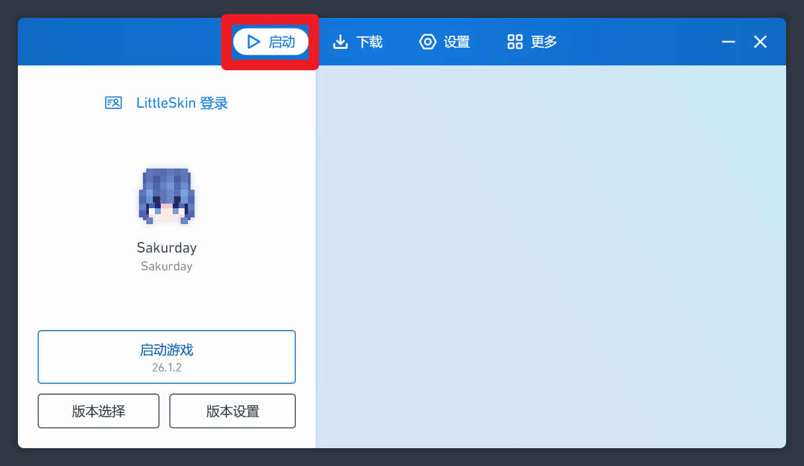

如果你想加入社区服务器, 那么你将绕不开这个世纪难题.
PCL 的唯一官方下载地址:
https://afdian.com/p/0164034c016c11ebafcb52540025c377
有三个下载地址, 你选哪个都行. 推荐选"备用下载", 输入提取码, 然后下载最新版即可
找到你下载的 PCL 正式版 x.xx.x.x.zip 压缩包, 右键这个压缩包, 找到你电脑上压缩软件的选项, 选择"解压到此处"

然后你会在这个文件夹找到 Plain Craft Launcher 2.exe.
如果你解压出来是一个文件夹, 点进去, 也能看到 Plain Craft Launcher 2.exe.

打开"此电脑", 你会看见电脑有 C 盘, 还可能有 D 盘或者 E 盘等
你需要找一个剩余容量比较大的盘, 在根目录新建一个文件夹 pcl
你可以按照你的喜好来起文件夹的名字, 但是不要用中文, 最好也不要带空格.
现在, 把 Plain Craft Launcher 2.exe 放进 pcl 文件夹, 这一步大功告成
从此以后, 你的 mc 里所有数据, 都会存进 pcl 文件夹, 包括游戏本体, 存档, 材质, 模组等等..
打开 Plain Craft Launcher 2.exe , 同意用户协议后, 你可以看见上方有四个按钮, 分别是
启动: 在这个页面, 你可以启动游戏, 也可以管理不同游戏版本
下载: 在这个页面, 你可以下载新游戏版本, 和模组/材质包/光影包/整合包/数据包
设置: 主要用于调启动器设置. 一般来说你很少用到这个页面
更多: 一些无关紧要的东西, 你用不到
我们以 HFUT 的原版服为例, 教你怎么进原版服


点击"开始下载"就好了!
下载完成后, 你可以在主页找到你下载的版本

这个部分待完善...